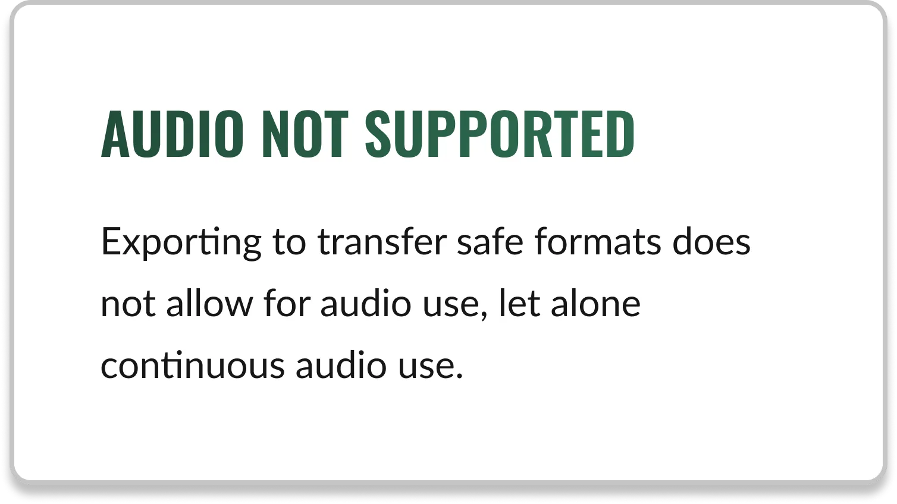
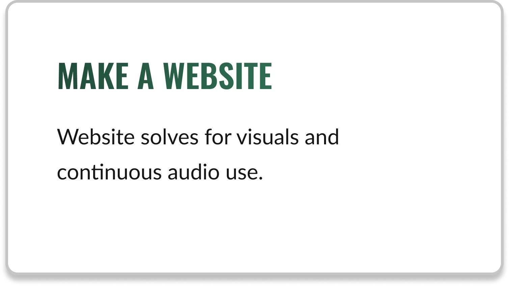
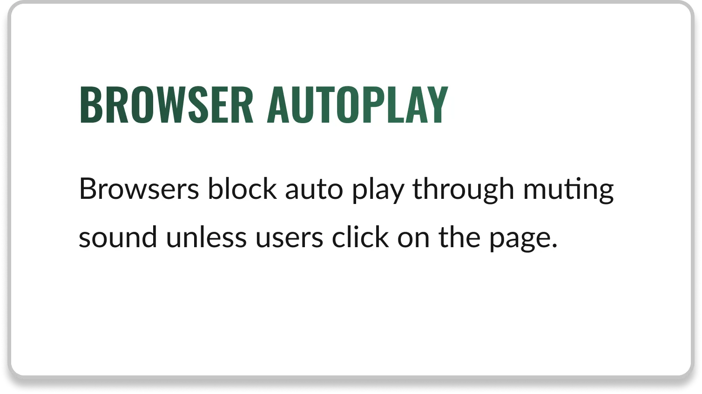
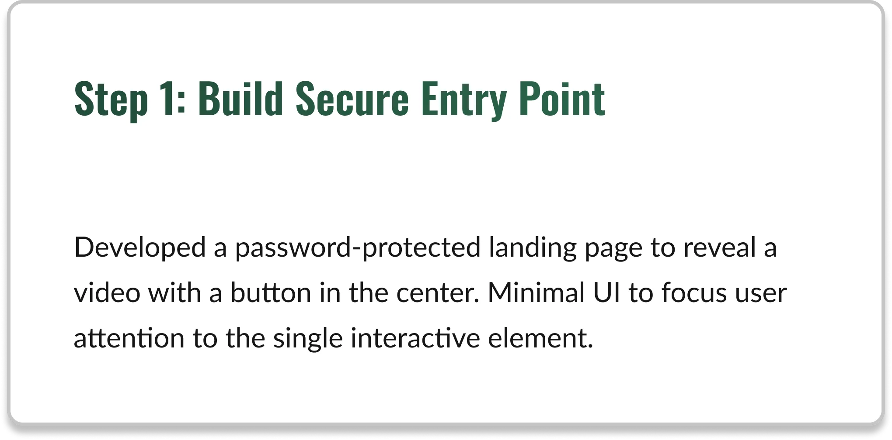
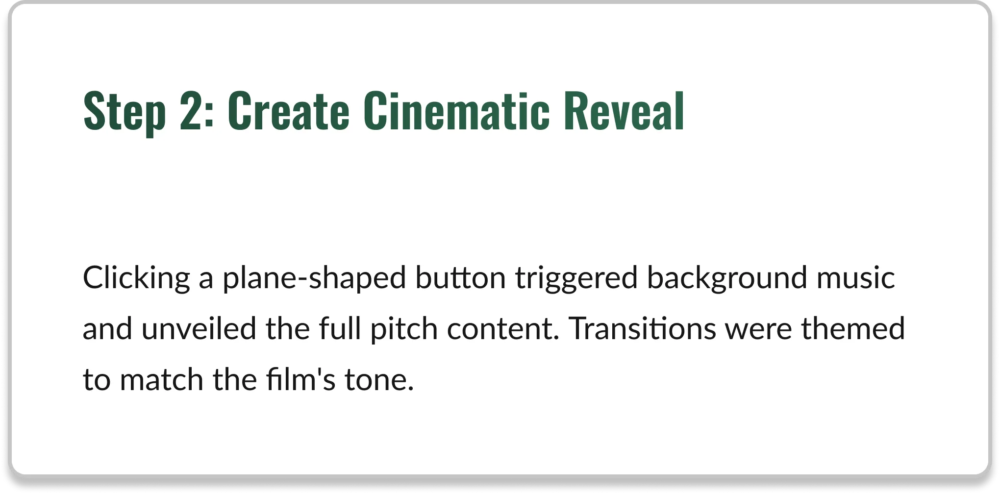
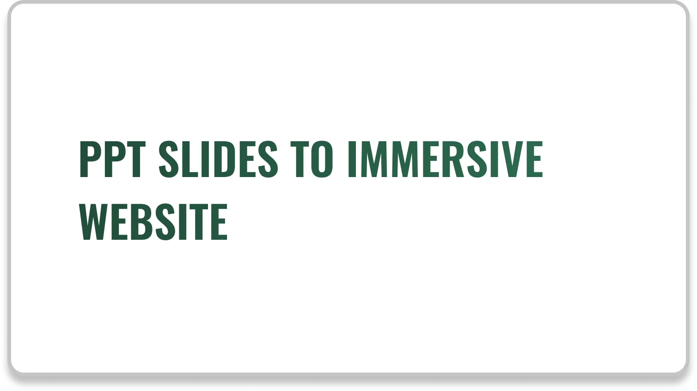
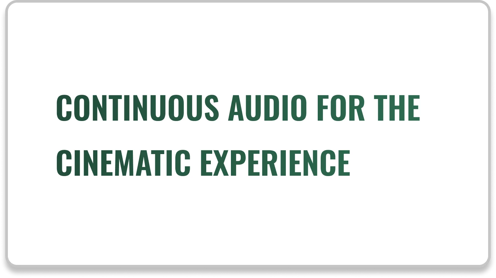
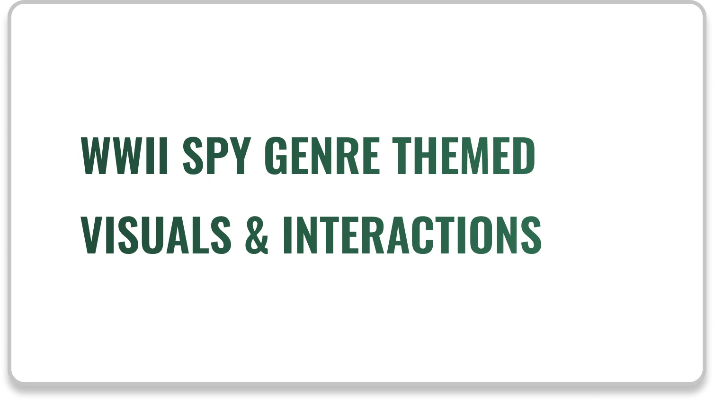

Summary:
Case study detailing how I transformed a static pitch deck request into a responsive web application to help differentiate their project in saturated market.
Jump to Section
Use these to jump to a section you are interested in:
Static presentations failed to capture the complexity of the filmmaker's vision.
In a high-stakes fundraising environment, our client found that standard slide decks were failing to retain investor attention or convey the emotional
weight of the film's narrative.
Investors were disinterested and failed to understand the project.
Without guided pacing, the "story" was lost.
Our client needed a solution that would differentiate their film project and their directorial style in a saturated market.
Solving the Problem
I proposed changing the medium: moving from a static deck to a linear web experience.
This allowed us to control the pacing of information and ensure the user experienced the pitch exactly as intended.
The Thought Process behind moving from a PPT to a Website:



The Solution
I architected and built a password-protected single-page application focused on minimalist UI and immersive atmosphere.
The design priority was to remove cognitive load, allowing the content to take center stage.
Visual Strategy & Moodboarding
To align with the product's "Cold War / Spy" genre, I established a design system and created visuals based on redacted documents and retro typography.
This ensured that the UI reinforced the narrative.
User Flow & Information Architecture
To maintain exclusivity (a key psychological driver for investors), the site begins with a secure login, leading into an "invisible ink" environment.


Development & Handoff
The site was built using custom vanilla JavaScript to ensure lightweight performance across devices.
Cross-browser testing was critical to ensure the atmospheric audio and transition effects functioned consistently on different viewports.
Final Deliverables
Note: Due to strict NDA compliance regarding the intellectual property, the live link is redacted. A sanitized low-fidelity prototype is available below.



Front-End Implementation
The hero section is the symbolic "curtain raise."
I utilized JavaScript to handle the transition states, ensuring that audio playback was triggered after the core user interaction (unveiling the "invisible ink" information),
complying with most browsers' autoplay policies.
Wireframe
Final Build
Business Impact
The interactive format successfully differentiated the pitch in high-level producer meetings.
Stakeholders spent significantly longer engaging with the narrative compared to previous static deck iterations.
The project established a new offering for the studio's pre-production packages, leading to return clients and WOM marketing.
What I learned
This project reinforced that we, as Product Specialists, still have a lot to do in Creative UX.
The biggest challenge and success was engineering that audio-visual flow that bypassed browser autoplay restrictions without disrupting user immersion.
Design for Non-Traditional Contexts
Applying UX principles to fundraising tells us that user-centered design can solve for communication problems, not just SaaS or E-Commerce.
Technical Constraints as Creative Drivers
Understanding the browser and media policies allowed me to create something that was both technically accurate and thematically on-point.